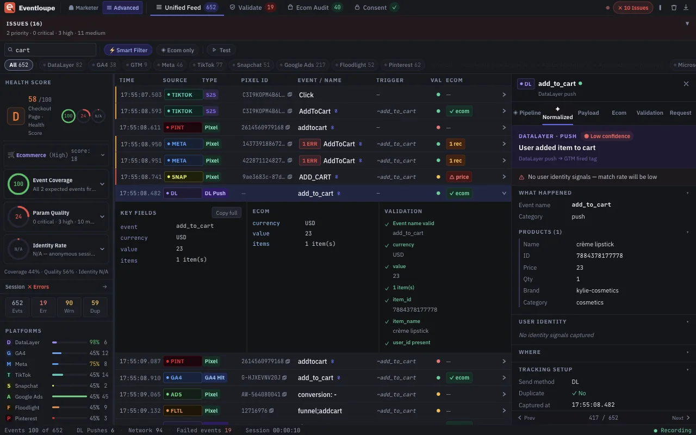
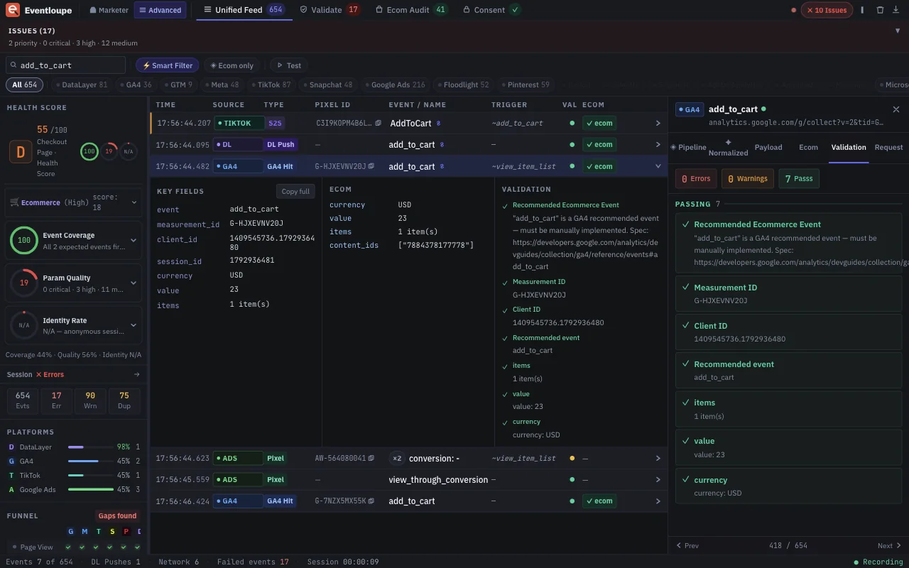
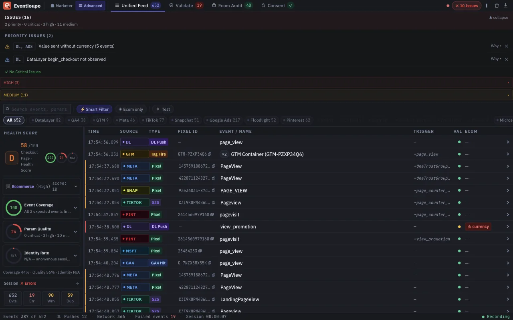
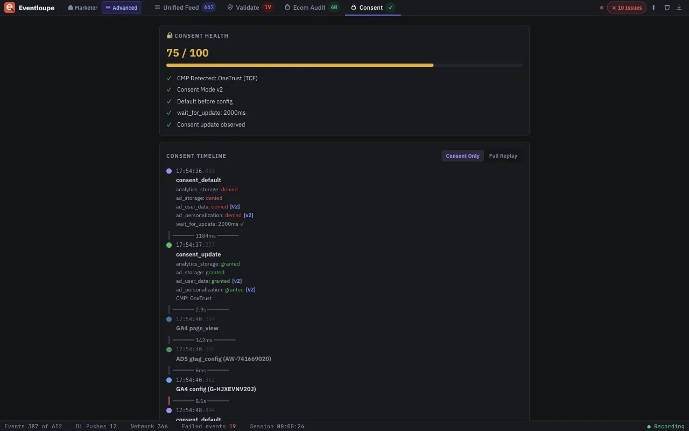

What happened?
Every event is captured the moment it fires, from dataLayer.push, SDK calls like gtag() and fbq(), and the network itself. Two capture channels run in parallel, so early pixels aren't missed.
A magnifier for tracking events.
Eventloupe is a Chrome DevTools extension. It shows every pixel, tag and dataLayer push a page fires, what was sent, and what was actually observed.
Chrome extension, launching soon on the Chrome Web Store.
Read the docsIllustrative example of one add-to-cart click on a sample page. Move the loupe, or tap and drag it.
How it works
Most tag debuggers tell you a request was made. Eventloupe tells you what happened to it, and why it says so.
Every event is captured the moment it fires, from dataLayer.push, SDK calls like gtag() and fbq(), and the network itself. Two capture channels run in parallel, so early pixels aren't missed.
Each event is traced through six stages, from your app to the response. Every stage is marked observed, failed, or unknown, so you can see exactly where the evidence stops.
Rule-based diagnostics with stable codes, EL1000 to EL9999. The same input always gives the same answer. No AI decides what's valid.
The truth gap
Fired is not the same as delivered. A missing response isn't a success, and it isn't a failure. Eventloupe keeps "I couldn't observe this" as its own answer instead of rounding it to yes or no.
httpStatus: 204
The request was seen and the response came back clean.
httpStatus: 500
The request was seen and delivery was confirmed to have failed.
httpStatus: null
Not observable from the browser. Shown as unknown, never as an error you didn't see.
Standard debugger
The SDK call fired, so a pass/fail badge says it worked.
Eventloupe
The request left the browser. The server's response says it wasn't recorded.
Illustrative example.
| Capability | Standard debuggers | Eventloupe |
|---|---|---|
| Status model | Success or fail. Two states. | Observed, failed or unknown. Three states. |
| What it relies on | Typically the SDK's own report of what it did | The network request and its response, alongside the SDK call |
| Missing evidence | Has to be shown as a pass or a fail | Shown as unknown, never guessed |
| Delivery | Not verified | Response status recorded where the browser exposes it |
| The report | A pass/fail badge | An evidence trail: six stages, each marked observed, failed or unknown |
"Standard debuggers" describes the common pass/fail approach, not any specific product.
When you need it
A conversion is missing
six stages · observed, failed or unknown
A conversion is doubled
duplicates flagged · GA4, Meta and more in one timeline
A client asks for proof
HTML report · JSON · CSV
Diagnostics
Codes are permanent identifiers: the wording can improve, the code never changes. They come from fixed rules, so the same input always gives the same result.
The JS API call was intercepted, but no matching network request was seen.
FixCheck whether a consent manager or ad blocker is suppressing the request.
The tracking server rejected the request, so the event was lost.
FixCheck the payload for malformed parameters or an invalid pixel ID.
The tracking server returned an error, so the platform failed to record the event.
FixThis is platform-side. Retry, or check the platform's status.
The event_id in the JS call doesn't match the one in the network request.
FixPass the same event_id to fbq() and to the CAPI server call.
The conversion may not be attributed to the right ad click.
FixMake sure Consent Mode is configured correctly for your consent platform.
gtag("consent","default") fired after gtag("config"), so tags may have fired with the wrong consent state.
FixMove the consent default before any config call, ahead of your tag manager.
Eventloupe reports what it observed. A request it doesn't see is "not observed", and the fixes suggest likely causes without claiming one. See how codes are grouped in the docs →
The panel
Captured from real sites, not mock-ups. Add to cart, checkout and consent, across every platform at once.




Six stages, each marked observed, failed or unknown. Select a stage to see what Eventloupe looks at there.
Stage 1 of 6 · Application
dataLayer.push, or an SDK call like gtag() or fbq().Illustrative pipeline for a single event. Failed stages are flagged where the evidence is, and unknown stages stay unknown.
Coverage
Eventloupe replaces switching between a handful of single-purpose debuggers. Every platform is read the same way and validated against its own documentation.
All product names are trademarks of their respective owners. Eventloupe is an independent tool and isn't affiliated with or endorsed by any of them.
Privacy
The Eventloupe extension doesn't collect, transmit or store any data outside your browser.
This site is held to the same standard. Its fonts, scripts and images all come from eventloupe.com, and analytics (Google Tag Manager) loads only if you accept it. Decline, and nothing from Google loads at all. Open Eventloupe on this page and check.
Read the full privacy policy →Questions
Eventloupe is a Chrome DevTools extension that shows every pixel, tag and dataLayer push a page fires, what was sent, and what was actually observed. It covers 23 platforms in one panel.
A typical debugger reports success or failure. Eventloupe records three states: observed, failed or unknown. A missing response is shown as unknown instead of being guessed, and each event is traced through six stages from the page to the response.
Google Analytics 4, Google Tag Manager, Meta Pixel, TikTok, Google Ads, Snapchat, Pinterest, LinkedIn, Reddit, Segment, Adobe Analytics, Amplitude, Mixpanel, Microsoft UET, X, Criteo, Floodlight, Taboola, Outbrain, Quora and the dataLayer.
No. It only observes requests. It never blocks or modifies them.
No. Captured events stay in your browser. The extension has no accounts, no servers and no analytics.
Eventloupe is launching soon on the Chrome Web Store.
Launching soon
What happened, how do we know, and what should be fixed: Eventloupe answers all three for every event. The extension is launching soon on the Chrome Web Store, and the documentation is open now.
A magnifier for tracking events.